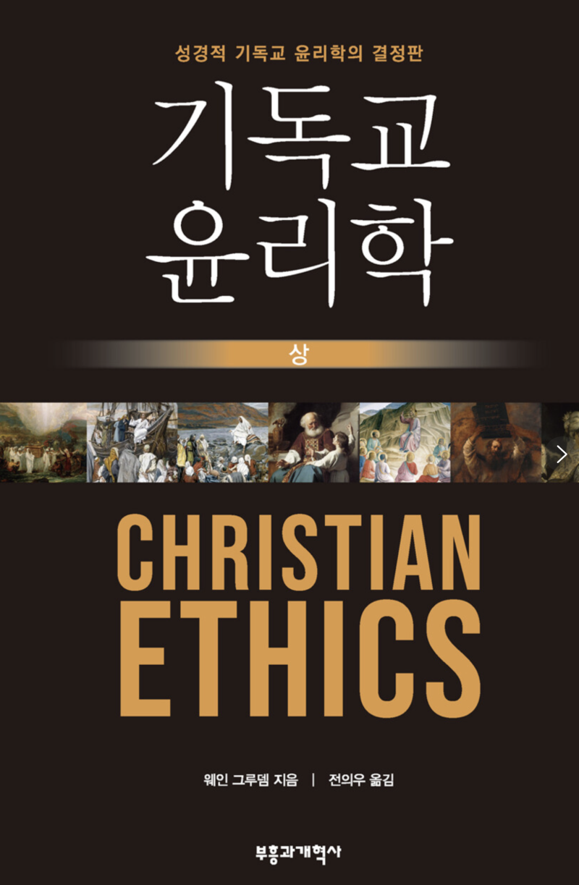

빌드업 메시지 : 첫 번째 책 이야기 "어떻게 살아야 할까?" 혹시 길을 잃은 듯 막막한 기분, 느껴보신 적 있나요?아침에 눈을 떠 수십 개의 뉴스 중 무엇을 믿어야 할지 고민하고, 직장에서 동료의 부당한 모습을 보았을 때 침묵해야 할지, 목소리를 내야 할지 망설입니다. '정의'와 '성공' 사이에서 아슬아슬한 줄타기를 하고, 수많은 관계 속에서 무엇이 '옳은' 선택인지 몰라 밤잠을 설치기도 하죠. 저 역시 얼마 전까지만 해도 그랬습니다. 세상은 끊임없이 정답을 요구하는데, 정작 제 손에 든 나침반은 고장 난 듯 제멋대로 빙글빙글 돌고만 있는 기분이었습니다.

내 판단의 근거가 과연 옳은 것인지, 이대로 살아도 괜찮은 건지 불안한 마음이 들 때, 제게 묵직한 질문을 던진 한 권의 책을 만났습니다. 오늘 여러분과 함께 그 첫 페이지를 열어보고 싶은 책, 바로 웨인 그루뎀의 『기독교 윤리학』입니다.

이 두꺼운 '벽돌 책'은 대체 어떤 질문에 답하고 있을까? '기독교 윤리학'이라는 제목과 1600페이지에 달하는 두께에 압도당하실 수도 있습니다. '교회 다니는 사람들만 보는 어려운 신학 책 아니야?' 하고요. 물론, 이 책의 모든 답변은 '성경'이라는 단단한 뿌리에서 출발합니다. 하지만 이 책이 던지고 답하는 질문들은놀랍도록 우리의 현실과 맞닿아 있습니다.
- 일과 돈 : 부와 가난을 어떤 태도로 대해야 할까? : 정직하게 사업을 한다는 것은 무엇일까? - 인간 관계 : 결혼과 이혼, 동성애 문제에 대해 성경은 무엇을 말하는가? - 사회 : 낙태와 안락사, 사형 제도처럼 생명이 걸린 문제 앞에서 나는 어떤 입장을 가져야 할까? - 국가 : 정부의 역할은 어디까지이며, 시민으로서 정치에 어떻게 참여해야 할까? 어떤가요? 이 질문들은 종교를 넘어, 21세기를 살아가는 우리 모두가 한 번쯤 마주하고 고민해 봤을 법한 삶의 문제들이지 않나요? 이 책은 이 모든 질문에 대해 "성경 전체가 무엇을 가르치는가?"라는 일관된 기준으로 답을 찾아 나서는, 그야말로 '인생 문제 총망라 가이드북'이라 할 수 있습니다.
'규칙'이 아니라 '성품'을 닮는다는 것 이 책의 핵심을 관통하는 가장 빛나는 문장을 하나 꼽으라면, 저는 주저 없이 이 개념을 선택하겠습니다.
윤리란, 단순히 '해야 할 일'과 '하지 말아야 할 일'의 목록이 아니라, 하나님의 선한 성품을 닮아 그분을 기쁘시게 하는 삶의 방식 그 자체다." 웨인그루뎀
우리는 흔히 '윤리'를 딱딱한 법 조항처럼 생각합니다. 하지만 웨인 그루뎀은 모든 윤리적 기준의 최종 근거는 변하지 않는 '하나님의 성품'에 있다고 말합니다. 우리는 왜 정직해야 할까요? 하나님이 진실하신 분이기 때문입니다. 우리가 왜 사랑해야 할까요? 하나님이 사랑 그 자체이시기 때문입니다.이러한 관점의 전환은 '해야만 한다'는 율법적인 부담감에서 우리를 자유롭게 합니다.
앞으로의 여정을 시작하며 : 함께 단단해질 우리 이 두꺼운 책을 한 번에 다 이해하고 소화하기란 쉽지 않을 겁니다. 그래서 '빌드업 메시지'에서는 앞으로 몇 번에 걸쳐 이 책의 지혜를 함께 나누어 보려고 합니다. 십계명을 큰 틀 삼아 우리 삶의 다양한 영역들(가정, 직장, 사회, 국가)을 하나씩 여행하며, 웨인 그루뎀의 깊이 있는 통찰을 여러분과 함께 나누고자 합니다.
다음 편에서는 이 책의 심장과도 같은 '기독교 윤리학의 기초'에 대해 이야기 나누어 보겠습니다. 복잡한 문제 앞에서 우리는 어떻게 하나님의 뜻을 알 수 있으며,어떤 과정을 통해 흔들리지 않는 결정을 내릴 수 있을까요? 그 구체적인 방법론이 궁금하시다면, 다음 여정에도 꼭 함께해주세요. 여러분의 삶에도 흔들리지 않는 단단한 기준점이 세워지기를, 모든 선택의 순간에 평안과 확신이 깃들기를 소망하며. 오늘 저의 첫 번째 책 이야기가 여러분의 마음에 작은 울림을 주었기를 바랍니다.
오늘 글을 읽으시면서 어떤 생각이 드셨나요? 요즘 당신을 가장 고민하게 만드는 '삶의 질문'은 무엇인가요? 댓글로 편하게 여러분의 이야기를 들려주세요. 함께 고민하고 길을 찾아가는 시간이 되었으면 합니다.